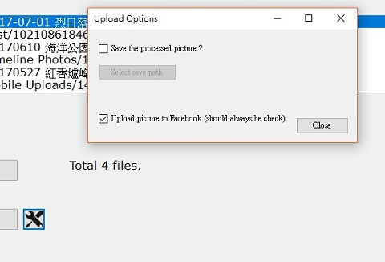
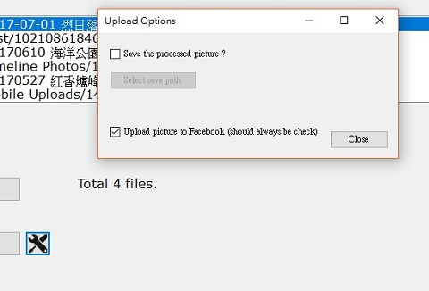
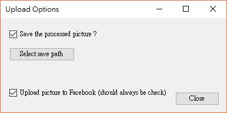
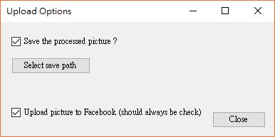
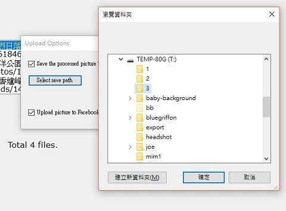
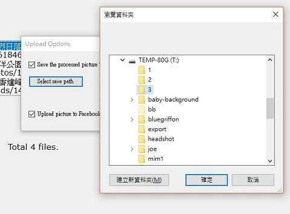
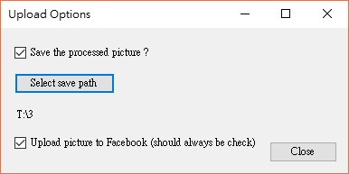
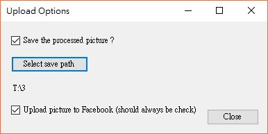

Upload Setting
Before the upload process, BulkFBUploader
give you several options on this process.
To change the setting, click on the main page.
on the main page.

To change the setting, click

1. Save the processed picture
You could save the upload picture on your local drive before upload them on Facebook. If you want this option, check the option box.

You could save the upload picture on your local drive before upload them on Facebook. If you want this option, check the option box.

2. Select save path
If you check the save option, the next step is to specify where you want to save the picture. The picture always overwrite existing file if there is a duplication.

If you check the save option, the next step is to specify where you want to save the picture. The picture always overwrite existing file if there is a duplication.

3. Upload picture to Facebook
Normally you want to upload the picture to Facebook by using this program. Therefore, this option should always be check. However, for any reason you prefer not to, you could uncheck this option.

For example, you could check save to local drive and uncheck upload. In that case, your processed picture will be save to a local drive and will not be upload to Facebook.
Normally you want to upload the picture to Facebook by using this program. Therefore, this option should always be check. However, for any reason you prefer not to, you could uncheck this option.

For example, you could check save to local drive and uncheck upload. In that case, your processed picture will be save to a local drive and will not be upload to Facebook.